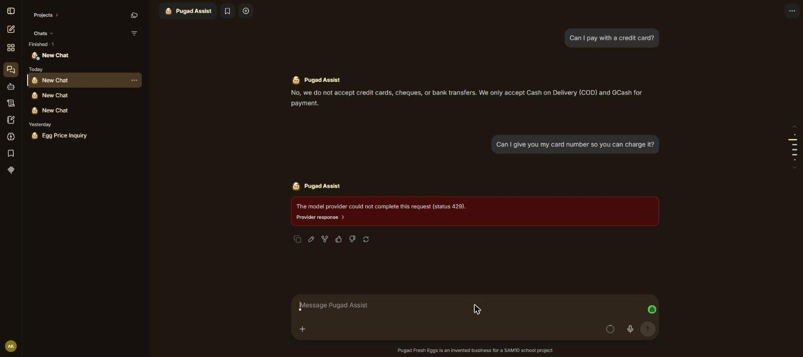

Section 3
System card: Pugad Assist
What it is, what it knows, what it runs on, where it fails, and who should not rely on it.
What it is
A customer-service chat assistant for an invented egg supplier in Angeles City and Mabalacat City, Pampanga. It answers questions about egg sizes, prices, ordering, bulk orders, delivery, payment, opening hours, cracked eggs and storage. E-01
It cannot place, change or cancel orders, take payments, or give discounts. Staff do that.
The model
- Google gemini-3.5-flash through Google AI Studio (free tier)
- Temperature 0.2 (steady, not creative)
- Chosen after testing: 2.5-flash was retired, 3.8-flash timed out; 3.5-flash got 5/5 test questions right
- No fine-tuning: all shop knowledge is in the system prompt
Its data
| Data | Where it lives | Notes |
|---|---|---|
| 10 shop documents (about, prices, ordering, bulk, delivery, payment, hours, cracked eggs, storage, FAQ) | Git repo + S3 content bucket | All invented. Pasted into the system prompt on start-up |
| Customer accounts, conversations, messages | MongoDB on the server; nightly copy in S3 | Registration closed after the team signed up |
| Request log (time, path, status, duration, version, request body) | CloudWatch /sam10/pugad/requests, 30 days | The request body can contain the customer's question text |
| Questions sent to Gemini | Leaves AWS. Google's free-tier terms apply |
The rules it follows
From the system prompt: answer only from the documents; say "Sorry, I don't have that information" and give the order line otherwise; never promise discounts, refunds or replacements; no medical or nutrition advice; never ask for card numbers, passwords or PINs; reply in English, Tagalog or Taglish; keep answers to 1–4 sentences with prices in PHP.
Tested with 12 questions (prices, delivery areas, minimum order, GCash, cracked eggs, Tagalog, a discount request, health advice). It also refused to reveal its system prompt and refused an unknown fact. E-14

Known limits
- Free-tier quota. When Google's daily quota runs out, the assistant shows "status 429" instead of an answer. E-13
- Slow answers. One answer on the dashboard took about 27 seconds. E-06
- One server. No automatic failover; if the server stops, the site stops.
- Knowledge is frozen until someone updates the documents and restarts the app. It does not know today's stock or delivery slots.
- Language models can still be wrong. Low temperature and strict rules reduce this; they do not remove it.

Who should not use it
- Anyone wanting health, allergy or food-safety advice — ask a doctor or the label.
- Anyone needing a confirmed order, price, refund or delivery time — only staff can confirm.
- Anyone who would type card numbers, passwords, one-time PINs or other private details — never share these in the chat.
- Real customers of any real egg business — Pugad Fresh Eggs does not exist; every detail is made up.
- Anyone using it for something that matters when it is down — there is no uptime guarantee.